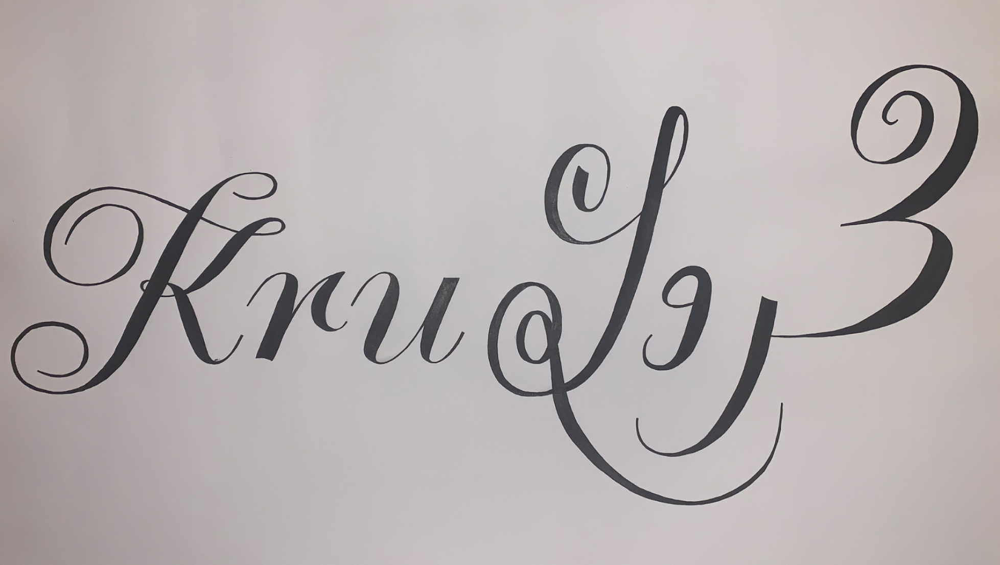
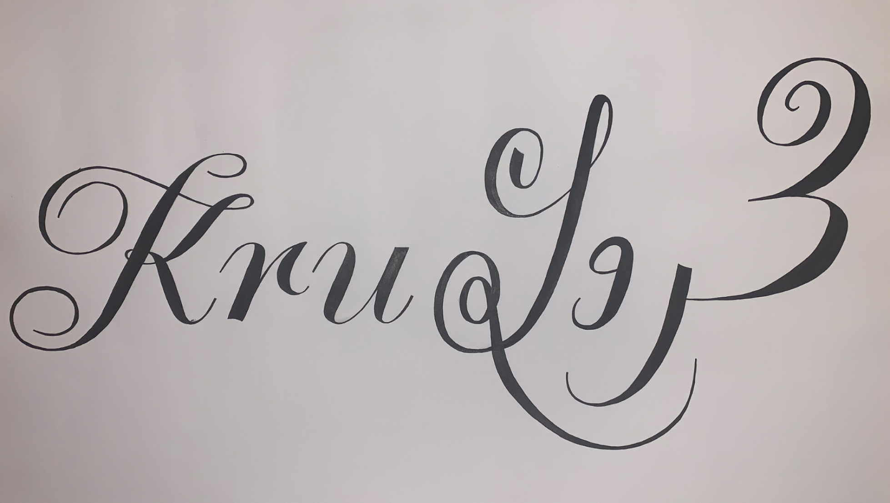

Publicatie en Poster
Typografie
Voor het vak typografie heb ik twee opdrachten gemaakt. Ik heb een publicatie gemaakt voor het lettertype 'krul' en een poster. Deze zijn hieronder te zien.
Voor het vak typografie heb ik twee opdrachten gemaakt. Ik heb een publicatie gemaakt voor het lettertype 'krul' en een poster. Deze zijn hieronder te zien.
